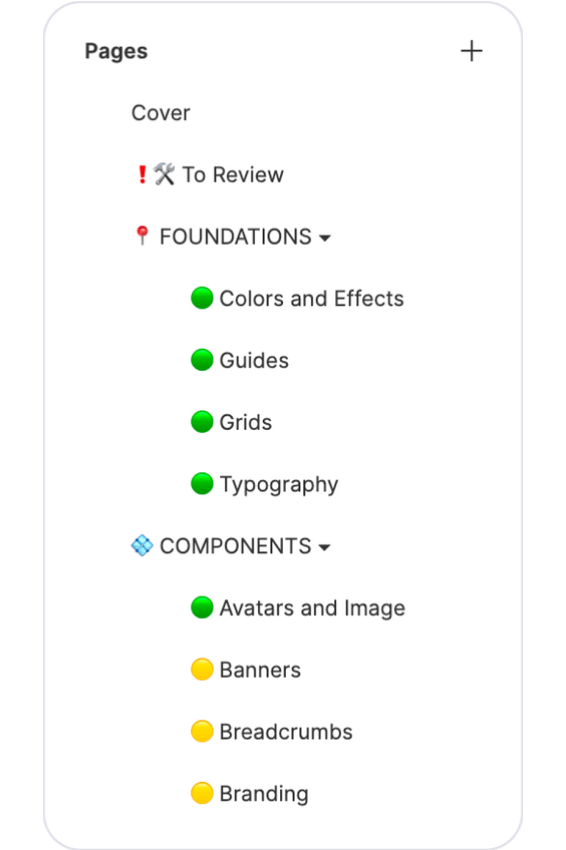
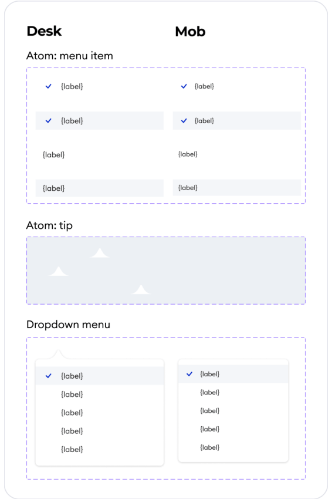

Design Library Structure
We knew for sure that the option with all components on one page would not suit us, because it is difficult to navigate, so we decided to use different pages. There was a question of choosing a grouping of components.
After going through a lot of design systems, we settled on a structure grouped by type: banners, cards, buttons, etc.
But we needed to group not only components, we also had styles, design tokens and guidelines. This is how two main sections of our library appeared: Foundations and Components.
We also decided to flag pages to show the status of being ready. If the component is completed, it is marked in green, if it is in progress and not completed, it is marked in yellow.


Atomic Design
The atomic design approach was used in the legacy library, but we’ve taken it to the next level with the new one. Combined with variants, our library became very flexible. Now we were able to design organisms like filter panels, where the smallest atom was a checkbox.